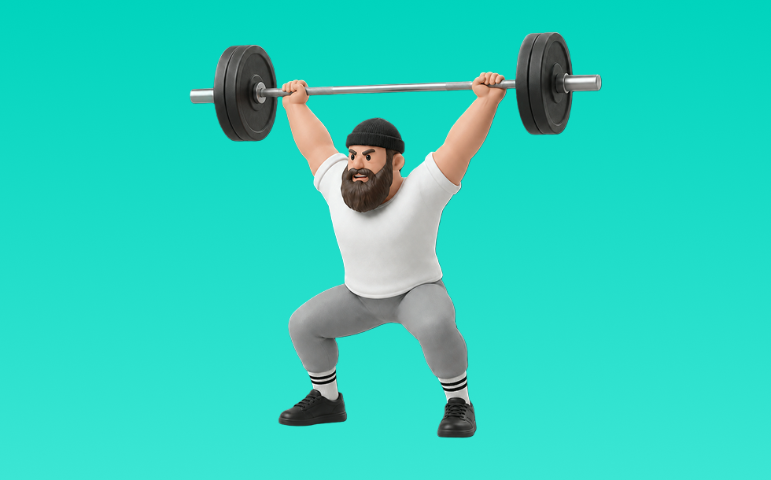

パワースナッチ

パワースナッチとは、バーベルを使って「動かす」動作で背中（広背筋、僧帽筋、菱形筋）＋腕（上腕二頭筋）を鍛える種目です。全身の連動と瞬発力が求められるのが特徴で、反動を抑えてコントロールしながら反復します。瞬発力と全身連動の向上が期待できます。
- 対象部位
- 背中
- 器具
- バーベル
- 記録形式
- 重量・回数
- 別名
- スナッチ
YouTube動画
-
パワースナッチ・スナッチ徹底ガイド：パート1 姿勢と柔軟性
-
パワースナッチ完全教科書マニュアル（1から10までフォームと手順を全部解説）
-
クリーンとスナッチの練習方法
-
【特に陸上選手には見てほしい】正しいスナッチのやり方
-
how to fix your snatch barbell to forward 【スナッチ】フォーム テクニック コツ
-
スナッチのやり方 (HOW TO DO SNATCH)
-
【有料級】日本記録保持者・松本潮霞がスナッチを初解説！
-
パワースナッチ・スナッチ徹底ガイド：パート２ プル
-
【スナッチ上達】驚くほどバーが軽く上がるようになるスナッチの練習方法 #snatch #スナッチ
-
ダンベルスナッチ完全教科書マニュアル（1から10までフォームと手順を全部解説）Dumbbell snatch
-
パワースナッチ・スナッチ徹底ガイド：パート3 キャッチ
-
スナッチの実践的なトレーニング!! 深く潜るポイントも解説!!
-
【スナッチ】初心者向けのスナッチ練習！
-
【パワースナッチ】これを意識すれば上手にできる！
-
【超有料級】ウェイトリフティングのオリンピック選手にスナッチを教えてもらったら凄かった
-
【スナッチ】やり方やフォームの注意点を解説！（ウェイトリフティング）
-
スナッチの正しいやり方(初心者向け)
-
【ウェイトリフティング】パワークリーンやスナッチのやり方はけん玉！
-
初心者でもダンベルスナッチが上達するスーパーテクニックをご紹介します|Techniques for speeding up dumbbell snatches
-
瞬発力upにパワークリーン＆パワースナッチの練習
-
スナッチをスムーズに行うための練習方法を徹底解説!!【筋肉アイドル才木玲佳の挑戦~ウエイトリフティング編~ #5】
-
【佐野優図が徹底解説】スナッチにおけるファーストプルの動き編
-
【プロが解説】これで君も『ケトルベルスナッチ』ができる！
YouTubeショート
-
ハングスナッチ75kg #ウエイトリフティング #松本潮霞 #スナッチ #weightlifting #snatch ch
-
スナッチのフォームを身につける方法
-
パワースナッチ フォームの確認 ウエイトトレーニング
-
「クリーンVSスナッチ」どちらが良いのか？ #楽トレチャンネル #ストレングストレーニングを日本の主流に #ウエイトリフティング
-
【スナッチ前の鉄板ウォームアップ】ドロップスナッチ！これでスナッチが更に安定します #ウエイトリフティング #スナッチ #dropsnatch #weightlifting #クロスフィット
-
ハングクリーン綺麗すぎ山縣さん#筋トレ #山縣亮太
-
【ウエイトリフティング】スナッチフォーム練習
-
シャフトを使用したスナッチのフォーム練習｜東京都ジュニア育成ウエイトリフティング教室
-
Hang Power Snatch ハングパワースナッチ
-
60kgスナッチフォーム練習
-
【ジェンディ今夢】スナッチ コンビネーショントレーニング 130kg
-
綺麗なフォーム PowerSnatch スナッチ 60kg
-
2013-01-21パワースナッチ＆スナッチ
-
アジア選手権優勝!｜宮本（73kg)191kgクリーン＆ジャーク
-
絶対やってはいけない❌ケトルベルスイング #Shorts
-
ジムでベンチプレス100kg以下の人を見た常連の反応 #shorts
-
エニタイムに体験に行ってイキリデッドリフトやる悪い人 #powerlifting #benchpress #squat #deadlift
-
パワースナッチ
-
ウエイトリフティングの本当の難しさ知ってる？
-
初心者おすすめ筋トレbig3
-
お手本のようなプルとスナッチ練習 🤩🤩🤩 （瀬川選手 69kg級）
-
体重56㎏でベンチプレス142.5㎏上げてみた💀
-
腰上げベンチ160kg
動作方法
- ウォームアップで心拍を段階的に上げる
- 目的に合わせてペースを設定する
- 終了後はクールダウンで整える
動作ポイント
- 呼吸を止めない
- 開始直後に追い込みすぎない
ワンポイントアドバイス
- 腕ではなく背中で引く感覚を優先する
- 反動が増えたら重量を一段下げる
目的別回数設定
目的や体力に応じた一般的な目安です。無理のない範囲で調整してください。
- 筋力アップ
- 1〜5回
- 筋肥大
- 6〜12回
- 持久力アップ
- 13〜20回
YouTube動画について
動画はYouTubeの公開情報をもとに表示しています。内容は投稿者によるもので、Biggrによる監修ではありません。
アプリを入手
筋トレやトレーニングの記録はBiggrにお任せください。今すぐ無料で使い始められます。